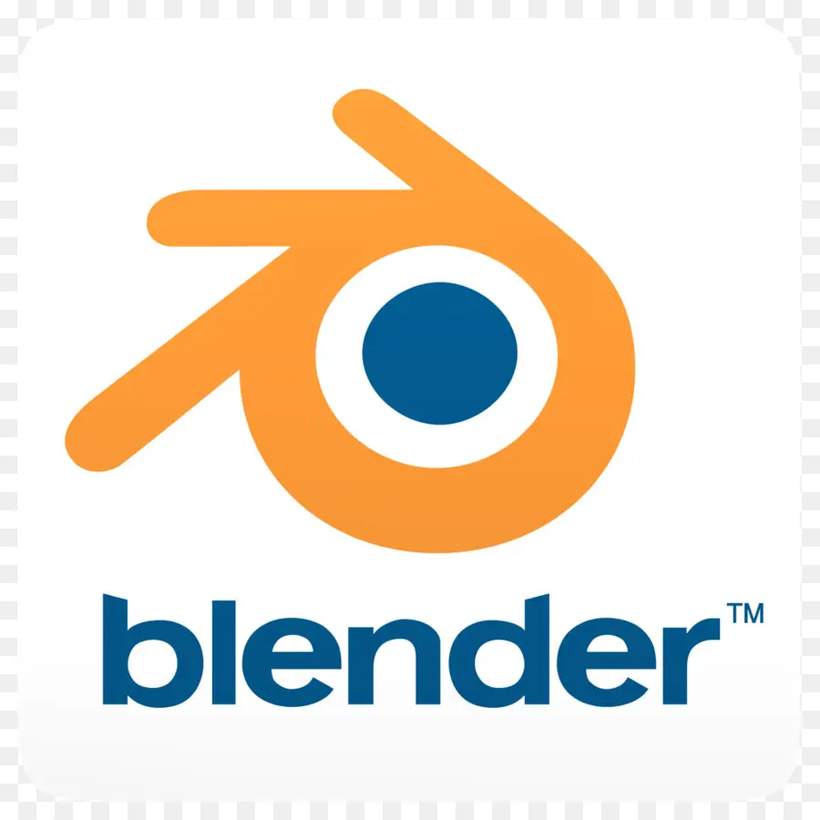
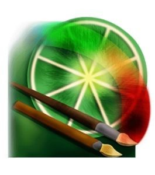

My Skills




I am a student of SMKN 12 Surabaya majoring in software and game development. I am passionate about combining good design, technology, and innovation in all my projects, which I want to accompany from the first idea to launch. Currently, I focus on frontend development.
This project is a website designed for a beauty clinic, with the main focus on a responsive and attractive appearance on mobile devices. This website is equipped with various features designed to support user interaction, complete information services, easy access to make orders and purchase products online.
This project is the creation of a website with a Lamongan City theme which is designed to introduce the unique culture and history of Lamongan City, such as typical Lamongan City food and drinks and its history.
Eternelle Beauty is a beauty clinic website designed to provide an easy and enjoyable experience for customers. This website provides various superior features, such as: Purchase Clinic Products Prom Information Treatment Reservations